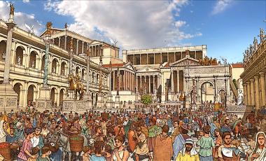
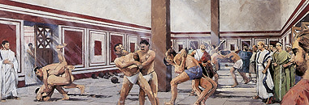
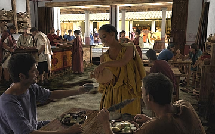

RTR: Imperium Surrectum
RTR: Imperium SurrectumMilling District (Urban) chain
3 levels, each replacing the one before it — you upgrade in place rather than building alongside.
Milling District (Urban) → Brewing Quarter (Urban) → Baking Guild (Urban)
Pictures are the game's own building art. Where a culture ships none of its own, the game falls back to another culture's, and that is what is shown here.
Levels at a glance
| Level | Cost | Build time | Minimum settlement | Upgrades to | Level | Cost | Build time | Minimum settlement | Upgrades to | ||
|---|---|---|---|---|---|---|---|---|---|---|---|
| Milling District (Urban) | 1,500 | 3 | large town | Brewing Quarter (Urban) | Brewing Quarter (Urban) | 3,000 | 4 | city | Baking Guild (Urban) | ||
| Baking Guild (Urban) | 6,000 | 5 | large city | — |
Costs in denarii, build time in turns.
Baking Guild (Urban)

Bread so fresh and soft, it’ll make your legions weep.
The Baking Guild District represents a vast confederation of ovens, workshops, and distribution centers ensuring fresh bread reaches every neighborhood before dawn. Master bakers coordinate enormous operations where hundreds of workers press, shape, and bake in carefully timed shifts. Massive communal ovens dominate the skyline. Networks of apprentices and delivery carts spread out like arteries, carrying warm loaves to markets, homes, and temples. The district's guild halls coordinate grain purchases, set quality standards, and ensure that from the humblest tenement to the greatest palace, the daily miracle of fresh bread continues unbroken.
As the saying goes, armies may march on their stomachs, but a city finds its strength in the bakery's steady hum.
History:
In 171 BC, during the Third Macedonian War, Greek bakers established the first professional bakers, known as pistores, in Rome. It was in ancient Rome where bread and pastries first began to be mass-produced. Archaeological research identified five different kinds of Roman baking, including baking in ashes, surrounding hot ashes, the sub testu method, and baking in earthenware vessels. Pastry cooks were known as pastillarium and bakers of sweetmeats as dulciarius or crustularius. By the end of the Republic, private bakers used mills to mass produce bread. Trajan established a collegium pistorum to ensure continuous bread supply. According to Pliny the Elder, women were the primary bakers in most families. Slaves or criminals were commonly used as workers in bakeries. Archaeologists have found over thirty commercial bakeries in Pompeii. Wealthy Romans purchased domestic slaves as bakers, seen as a sign of aristocratic status. Cicero considered baking a lowly occupation.
Wording varies by culture: 2 versions of this description exist in the game files.
| Cost | 6,000 denarii | Build time | 5 turns | Minimum settlement | large city |
What it does
- +2 population growth
Show 6 effects that apply only in the circumstances shown
- +10 taxable income — only when
not hidden_resource irrigation_river and not beer_factions - +10 taxable income — only when
not hidden_resource irrigation_river and beer_factions - +10 taxable income — only when
hidden_resource irrigation_river and beer_factions - +15 taxable income — only when
hidden_resource irrigation_river and not beer_factions - +2 public order (happiness) — only when
beer_factions - +1 trade income — only when
beer_factions
What the shorthands in those conditions stand for (1)
These are the mod's own, quoted from the game files unchanged.
| Shorthand | Stands for | ||||||
|---|---|---|---|---|---|---|---|
beer_factions | not factions { greek, roman, } |
Milling District (Urban)

Grain goes in, flour (and life) comes out.
The Milling District spans entire quarters of the city, where countless grinding wheels work day and night. This industrial heartland draws grain caravans from across the realm, funnelling harvests through an intricate network of warehouses, water channels, and stone mills that never sleep. Here, master millers oversee armies of workers who sort, clean, and grind endless streams of grain into the flour that feeds tens of thousands. The district's maze of workshops, storage vaults, and transport canals forms the system that feeds its people, transforming seasonal harvests into year-round abundance. From the main mills powered by diverted rivers to the smaller neighbourhood operations serving local bakers, this milling district ensures no citizen goes without bread.
In a world fueled by grain, the mill is a quiet hero, ensuring every crumb is savoured by the grateful populace.
| Cost | 1,500 denarii | Build time | 3 turns | Minimum settlement | large town | Upgrades to | Brewing Quarter (Urban) |
What it does
- +1 population growth
Show 2 effects that apply only in the circumstances shown
- +3 taxable income — only when
not hidden_resource irrigation_river - +6 taxable income — only when
hidden_resource irrigation_river
Brewing Quarter (Urban)

Where the city's flour is made ready.
Here, all the flour from many mills comes together. No longer just a collection of workshops but a meticulously planned industrial behemoth within the city. You see vast, multi-storied structures dedicated to the advanced cleaning, sifting, and mixing of flour, ensuring a consistent quality that feeds a metropolis. Conveyor systems transport the processed flour directly into storage silos, each capable of holding enough to feed an army for a month. Workers watch over everything, making sure it all runs smoothly. This is where raw grain turns into good flour, ready to go to the city's bakeries.
It's the step between the fields and the bread people eat every day.
Wording varies by culture: 2 versions of this description exist in the game files.
| Cost | 3,000 denarii | Build time | 4 turns | Minimum settlement | city | Upgrades to | Baking Guild (Urban) |
What it does
Show 8 effects that apply only in the circumstances shown
- +1 population growth — only when
beer_factions - +2 population growth — only when
not beer_factions - +6 taxable income — only when
not hidden_resource irrigation_river and not beer_factions - +6 taxable income — only when
not hidden_resource irrigation_river and beer_factions - +6 taxable income — only when
hidden_resource irrigation_river and beer_factions - +10 taxable income — only when
hidden_resource irrigation_river and not beer_factions - +2 public order (happiness) — only when
beer_factions - +1 trade income — only when
beer_factions